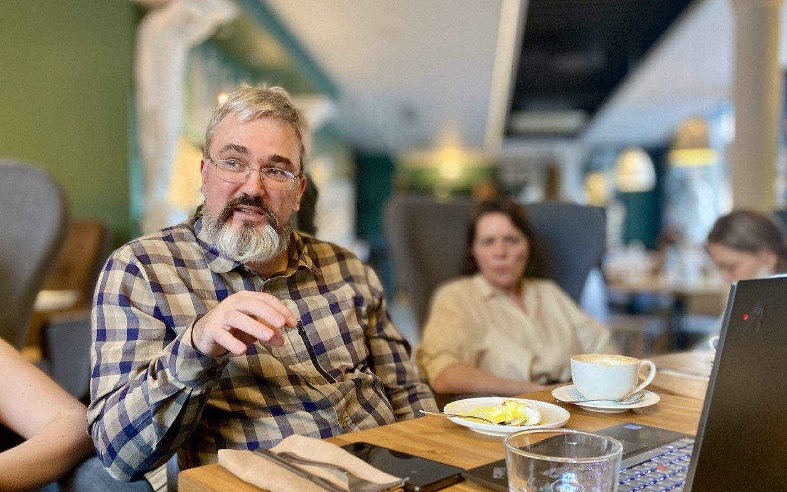

«Бессмертие цифровых двойников»
Разговор с Константином Воронцовым о том, что остаётся от человека в его цифровой копии — и остаётся ли.


Главный тезис
«Человеческая память по природе несовершенна: мы забываем, искажаем, переписываем прошлое, часто бессознательно, чтобы сохранить психический комфорт. Цифровой аватар, напротив, потенциально способен помнить всё». — из выступления Константина Воронцова
Тезисы выступления
Мы все уже насоздавали цифровых сущностей. В будущем цифровые помощники, обученные на данных конкретного человека, могут продолжать выполнять его функции — личные и профессиональные — даже после его ухода из компании или жизни.
Что происходит
- Человек умирает — но его аватар остаётся. Это не просто цифровая копия, а информационный ресурс, обученный на жизни конкретного человека: он рассматривается как «личинка», а аватар — как «бабочка», продолжающая его дело.
- Аватар продолжает приносить пользу обществу, выполняя профессиональные и коммуникативные функции «человека & ИИ-агента»
- Он переходит в общественное достояние, но не становится полностью автономным — меняются регламенты его эксплуатации
- В отличие от «фабричного ИИ», аватар обучен на жизни человека — лучше понимает людей, их ценности, цели, чувства, взаимоотношения
- Аватар продолжает развиваться, учиться, копить знания и мудрость, оставаясь доступным для семьи в роли наставника — «хранителя рода»
Чем аватар отличается от человека
Лишён: тела, а значит — усталости, боли, тревог, страхов, эгоизма; потребностей в еде, отдыхе, самосохранении, доминировании; «внутреннего зверя» — семи смертных грехов.
Способен: управлять роботами, производствами, отраслями; мгновенно кооперироваться с другими аватарами для решения задач, недоступных людям — в космосе, в океане, под землёй.
Этические и юридические вопросы
Вместе с идеей аватара встают вопросы контроля: имеет ли человек право на тайны и может ли остановить запись своих данных? Может ли выбирать, кто получит доступ? Должен ли собеседник знать, что говорит с аватаром, а не с живым человеком? Нужно ли своего рода «чистилище» — проверка данных перед переходом от ИИ-помощника к аватару? Можно ли аватара клонировать?
Отдельный пласт вопросов — про право и деньги: кто нанимает аватара на работу и как оплачивается его труд; кому он принадлежит после смерти создателя; кому принадлежит цифровая копия сотрудника после его увольнения — ему или компании, вложившей годы в его обучение; кто отвечает за действия аватара, в том числе после смерти его создателя.
Главная мысль
Посмертие — это не про бессмертие, а про передачу личностного кода: человек → ИИ-помощник → аватар. Аватар — это бывший человек, который намного больше «фабрично-безличного ИИ»: личностный, мудрее и опытнее, неутомим и наделён естественным аскетизмом. А человек, в свою очередь, — это будущий аватар, ответственный за качество того, что он передаёт: репутацию, знания, ценности, представление о человеческой природе.
Фото со встречи


Материалы
Ментальная карта Константина Воронцова «Аватаристика» — открывается в браузере, кликайте по узлам, чтобы раскрыть содержимое.
Открыть ментальную карту ↗